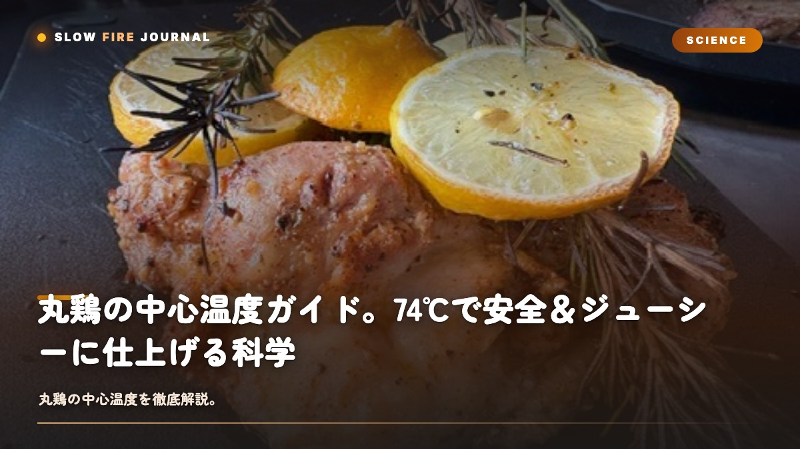

丸鶏の中心温度ガイド。74℃で安全＆ジューシーに仕上げる科学
丸鶏を焼いたら、胸はパサパサ、でも、ももはまだ赤い…そんな経験、ありませんか？実はこれ、あなたの腕のせいではないんです。原因は、胸とももで「ちょうどいい温度」がそもそも違うこと。丸鶏を成功させる鍵は、胸74℃ともも82℃という「2つの目標温度」を持ってあげることなんですよね。胸はそれ以上焼くとパサつきますし、ももはそれ以下だと繊維が硬くて血色が残ってしまう。同じ1羽の鶏のなかで、部位ごとに完成温度が違う——これが丸鶏の本質的な難しさなんです。言いかえると、温度は安全とジューシーを両立させてくれる装置でもあります。この記事では、カンピロバクター対策の科学から、ビアキャン＋リバースシアの実践、皮をパリッと弾けさせる温度の使い方まで、丸鶏を確実に成功させる「温度の教科書」をお届けしますね。

なぜ74℃が「安全」のラインなのか
鶏肉でいちばん気をつけたいのは、サルモネラ菌とカンピロバクターの2つです。どちらも加熱でちゃんと死滅してくれるんですが、温度と時間の組み合わせで考えてあげる必要があるんですよね。USDA（米国農務省）の公的な基準は、鶏の中心温度を74℃（165°F）に到達させること。この温度まで上げてあげれば、病原菌は瞬時に死滅します。
面白いことに、もっと低い温度でも、長い時間キープすれば同じくらいの安全性が得られるんです。たとえば60℃で35分、63℃で14分、66℃で6分維持すれば、74℃に瞬間到達するのと同じ殺菌効果になります。これはロー&スローの世界では常識なんですが、家庭BBQだと温度を厳密にキープするのがなかなか難しいので、まずは74℃を最低ラインとして覚えておくのが安心ですよ。
74℃という数字には、もうひとつ理由があります。これより低いと胸肉のミオグロビンがピンク色のまま残ってしまって、たとえ安全でも「生っぽいな」と感じる方が多いんですよね。安全と心理的な安心、その両方を満たしてくれるのが74℃なんです。だからこそ、これが世界共通の基準値になっています。
| 温度 | カンピロバクター死滅時間 | 料理的な意味 |
|---|---|---|
| 55℃ | 5時間以上 | 低温調理の下限、家庭BBQでは非現実的 |
| 60℃ | 35分 | 低温調理のスイートスポット |
| 63℃ | 14分 | ピンクが残る、家庭では非推奨 |
| 70℃ | 1分以下 | 急速に安全、まだジューシー |
| 74℃ | 瞬時 | USDA公式基準、もっとも安全 |
2つの目標温度 — 胸74℃、もも82℃
丸鶏の「中心温度」を語るとき、実はひとつの数字でぜんぶを説明するのは無理なんです。というのも、鶏って胸とももで、まったく性質の違う肉の集合体だからなんですよね。この2つは構造も結合組織の量も水分量も違っていて、ベストな完成温度がそもそも違うんです。
胸（ブレスト）— 目標74℃、それ以上は乾燥地獄
胸肉は「速筋」と呼ばれる白い筋肉で、結合組織が少なくて、水分が多いのが特徴です。65℃以上でミオシンが急速に縮みはじめて、74℃を超えると保水力がガクッと下がってしまうんですよね。78℃でカサカサ、80℃になるとほぼ乾燥肉です。丸鶏で胸がパサつく最大の原因は、ここにあります。
もも（サイ）— 目標82℃、74℃ではまだ硬い
もも肉は「遅筋」と呼ばれる赤い筋肉で、結合組織が多くて、コラーゲンが豊富です。74℃ではコラーゲンがまだほどけていないんですよね。82℃前後になってはじめてコラーゲンがゼラチン化して、しっとり柔らかくなります。74℃で食べると「血色が残っていてちょっと気持ち悪いな」と感じやすいのは、ミオグロビンというより、むしろ変性しきっていないコラーゲンが赤く見えてしまうからなんです。
| 部位 | 目標温度 | 低すぎると | 高すぎると |
|---|---|---|---|
| 胸（最厚部） | 74℃ | 生っぽい、安全性に不安 | 乾燥、パサパサ |
| もも（関節付近） | 82℃ | 硬い、血色が残る | 繊維が崩れ、ぼそつく |
| 手羽 | 80〜85℃ | 固いゴム質 | 骨から離れる |
| 関節 | — | 赤い血、生骨臭 | — |
丸鶏の温度カーブと部位の時差
1.5kgの丸鶏を160℃でローストすると、温度はだいたい以下のように動いていきます。注目してほしいのは胸とももの、タイミングのズレです。ももの方が外側にあって、表皮も薄いので、先に温度が上がってくれるんですよね。
| 経過時間 | 胸の温度 | ももの温度 | 料理人がすべきこと |
|---|---|---|---|
| 0分（投入時） | 5℃ | 5℃ | 低温域でじっくり昇温 |
| 20分 | 30℃ | 35℃ | 表面に色がつき始める |
| 40分 | 52℃ | 60℃ | 胸はまだ生、ももの方が速い |
| 60分 | 65℃ | 72℃ | 胸の最終直線、注意ゾーン |
| 75分 | 72℃ | 78℃ | 胸の引き上げ準備 |
| 85分 | 74℃ | 82℃ | 完成、グリル外へ |
ポイントは、胸が74℃に達した瞬間に、ももが82℃前後でちょうど揃うことなんです。これは「偶然」ではなくて、丸鶏の構造上、外側にあるももが先に温度上昇してくれるので、結果的にタイミングが合ってくれるんですよね。逆に言うと、ももの方を先に内側に置くような焼き方をすると、2つの温度差はもっと開いてしまいます。
胸を守ってあげたいなら、胸を上向きにせず、最初の30分を「胸下向き」でローストする手もありますよ。こうすると、ももが受ける熱を強くして、胸を相対的に守ってあげられます。ただし、皮をきれいに仕上げたいなら、胸上向きが基本になります。詳しい工程はビアキャンチキンの作り方に書いておきました。
ビアキャン＋リバースシアの実践プロトコル
丸鶏を「胸ジューシー、皮パリパリ、もも柔らか」の三拍子で仕上げる最強の手法が、ビアキャン＋リバースシアの組み合わせです。ビールや水を入れた缶の上に鶏を立てて焼くと、缶からの蒸気で胸が内側から保湿され、外側はじっくり乾く。これにリバースシアの温度カーブを組み合わせます。
| フェーズ | グリル温度 | 胸の目標 | 所要時間（1.5kg） |
|---|---|---|---|
| ① 低温ロースト | 150℃ | 胸65℃まで運ぶ | 約60分 |
| ② 中温フェーズ | 170℃ | 胸72℃まで | 約15分 |
| ③ 高温シア | 220℃ | 胸74℃・皮パリッ | 5〜10分 |
| ④ レスト | 室温 | キャリーオーバーで均一化 | 10分 |
このプロトコルの肝は、フェーズ①で胸を65℃まで「ゆっくり」運んであげることなんです。いきなり高温で焼いてしまうと、胸の外側だけ80℃に達して乾燥して、中はまだ60℃、という最悪の状態になってしまいます。低温でゆっくり、温度差を作らないように運んであげる——これがリバースシアの原理なんですよね。ロー&スローとは何かでお話ししたコラーゲン理論の、鶏もも版がここで効いてきます。
ビアキャンの缶は、ビールである必要はない
缶の中身は、水でも、ハーブ入りの白ワインでも、リンゴジュースでも構いません。大事なのは「液体が蒸気になって胸を保湿してくれる」という役割なんですよね。ただ、蒸気の風味は鶏にも移るので、お酒を使うなら、鶏に合う軽めの白ワインや日本酒もおすすめですよ。ビールが本場テキサスで定番になっているのは、純粋に手に入りやすいから、というだけだったりします。
皮をパリッと弾けさせる温度の科学
丸鶏の評価って、実は半分くらいを皮が決めているんですよね。中がいくらジューシーでも、皮がふやけていると魅力は半減してしまいます。皮をパリッと弾けさせるには、温度の使い方にはっきりした原則があるんです。
原則①：焼く前に皮を乾燥させる
冷蔵庫で覆いなしのまま12〜24時間置いて、皮の水分を蒸発させてあげてください。これだけで完成度がぐっと上がります。皮の水分が多いと、最後にどれだけ高温で焼いても「蒸し焼き」になってしまって、パリッとしてくれないんですよね。皮の水分を飛ばすのは、火ではなく、時間と空気でやってあげるのが基本です。
原則②：低温で焼いてからシアする
最初から高温で焼いてしまうと、皮の脂が表面で焼かれすぎて焦げて、中身は半生、という結果になりがちです。低温（150〜170℃）でじっくり火を入れて、最後の5〜10分だけ高温（210〜230℃）に上げてあげましょう。皮の脂はゆっくり融けて、最後にパチッと弾けるんです。これがリバースシアの、皮への応用ですね。
原則③：塩を「乾塩」で前日に
焼く12〜24時間前に、皮にしっかり塩をすり込んで、ラップなしで冷蔵庫に入れておきます。塩の浸透圧で皮の水分が外に出てから蒸発する、という二段階の乾燥が起きてくれるんですよね。これは塩漬け（ドライブライン）の応用で、味も同時に決まってくれる、まさに一石二鳥の方法ですよ。
- NG例：焼く直前に水で洗う（皮がふやけて、絶対に乾燥してくれません）
- NG例：オリーブオイルを大量に塗る（油の層が皮の乾燥を妨げてしまいます）
- NG例：最初から高温で焼く（皮が焦げて、中が半生になってしまいます）
温度計の刺し方 — 胸と腿、それぞれの基準点
丸鶏は「2本差し」が基本になります。1本だとどうしても足りなくて、胸とももそれぞれに温度計を刺してあげることで、両方の目標温度を同時に追いかけられるんですよね。
- 胸の基準点：胸骨の脇、いちばん厚い部分の中央です。骨に当たらないよう、骨の脇を狙ってあげてください。
- ももの基準点：太もも内側、関節付近のいちばん厚い部分です。骨を避けて、肉の中央へ。
- 避けるべき場所：骨（高めに出ます）、皮の下の脂（低めに出ます）、関節の隙間（誤検出のもとです）。
- 推奨ツール：Wi-Fi温度計（Meater Plus、Inkbird IBT-26S）の2本セットがあると便利ですよ。
判定の優先順位は、ずばり「胸ファースト」です。胸が74℃に達したら、ももが82℃に届いていなくても、思い切って引き上げてしまう選択肢があります（ももを少し追加で焼くか、あるいはもともと胸より熱に強いので、82℃までいかなくても許容できるんですよね）。逆に、もも優先で82℃まで待ってしまうと、胸が80℃を超えて、致命的な乾燥肉になってしまいます。胸を救うために、ももは少し早めに切り上げてあげる——これが、いまの丸鶏戦略だと思っています。
失敗パターン3つと対策
SLOW FIREがワークショップで見てきたかぎり、丸鶏の失敗の99%は、次の3つに集約されるんですよね。正直に言うと、僕も最初はぜんぶやらかしました。
失敗パターン①：1本の温度計で「胸だけ」見ている
胸が74℃になったので取り出したら、ももが赤くて血色が残っていた…というケースです。胸の温度上昇は遅いので、その時点でももは75℃前後しかない、という状況がよく起きます。だからこそ2本差しが鉄則なんですよね。Wi-Fi温度計を2本用意するか、最初に低温でじっくり焼く時間を長めにとってあげてください。
失敗パターン②：最初から高温で焼いて、皮が焦げて中が半生
「丸鶏は強火で皮をパリッとさせるんだ」と思い込んで、220℃以上で最初から焼いてしまうケースです。皮は早々に焦げて、中はまだ生、という事故が本当によく起こります。低温→高温の順番が原則ですよ。皮のパリッは時間ではなく、最後の高温シアで作ってあげましょう。
失敗パターン③：レストを軽視して即カット
74℃に到達したのが嬉しくて、すぐ切ってしまうと、肉汁が大量に流れ出てしまいます。プライムリブと同じで、丸鶏にもレストが必要なんですよね。10分のレストを取ってあげてください。アルミホイルで軽く覆って、肉汁が繊維に戻っていくのを待つ。この時間こそが、ジューシーさを完成させてくれます。
丸鶏の温度を読めるようになると、鶏むね、鶏もも、手羽、ささみ、すべての鶏料理に応用できる温度感覚が手に入ります。これは、BBQを日常にするための、いちばん小回りの効く一歩なんですよね。週末のビアキャンチキンから、平日の焼き鳥まで。だんだんと、温度計があなたの言葉になっていきますよ。
CONCLUSION
結論
あらためてまとめると、丸鶏の中心温度は、胸74℃、もも82℃。1羽の鶏のなかで、目指す温度は8℃も違うんですよね。この温度差を意識してあげて、低温でじっくり胸を運んで、最後の高温シアで皮を弾けさせて、10分のレストで完成させる——これが、安全とジューシーと皮パリパリの三立を実現してくれる科学なんです。
レシピの全体はビアキャンチキンの作り方で、火入れの基礎理論はリバースシアとロー&スローで、それぞれ深掘りしています。BBQが日常になるというのは、温度計が自分の言葉になっていく、ということなんですよね。丸鶏は、その第一歩にいちばんぴったりな肉だと思っています。ぜひ一度、焼いてみてください。
FAQ
丸鶏の温度管理についてよくある質問
丸鶏の中心温度は何℃で完成ですか？
胸のいちばん厚い部分で74℃、ももの関節付近で82℃が目安になります。胸は74℃を超えるとパサついてしまいますし、ももは74℃だとまだ繊維が硬いんですよね。胸と腿で目標値が違うところが、丸鶏の難しさなんです。
胸肉が乾燥する原因は？
ほぼ100%「焼きすぎ」なんです。74℃を超えると保水力がガクッと下がって、78℃でカサカサ、80℃になるとほぼ乾燥肉になってしまいます。胸が74℃のときにももは80℃前後、というバランスを目指してあげてください。
ビアキャンチキンは何℃を狙えばいいですか？
胸74℃、もも82℃を狙ってあげましょう。ビアキャンは缶の蒸気で胸を保湿しつつ、外側からじっくり火が入るので、部位の温度差が縮まりやすいんですよね。150〜170℃の中温で60〜90分が目安です。
鶏は何℃から安全に食べられますか？
USDAの公的基準は74℃（165°F）です。これでサルモネラやカンピロバクターが瞬時に死滅してくれます。低温長時間でも安全は達成できますが、家庭ではまず74℃を最低ラインにしておくのが安心ですよ。
皮をパリパリにするには温度をどう使う？
①焼く前に冷蔵庫で12〜24時間ほど皮を乾燥させて、②150〜170℃でじっくり火を入れて、③最後に210〜230℃で5〜10分シアしてあげます。温度差をつけることで、皮はパリッ、中はジューシーの両立ができますよ。
PERFECT WITH
丸鶏におすすめのラブ
74℃で完成するジューシーな鶏を、香りで支える厳選ラブ